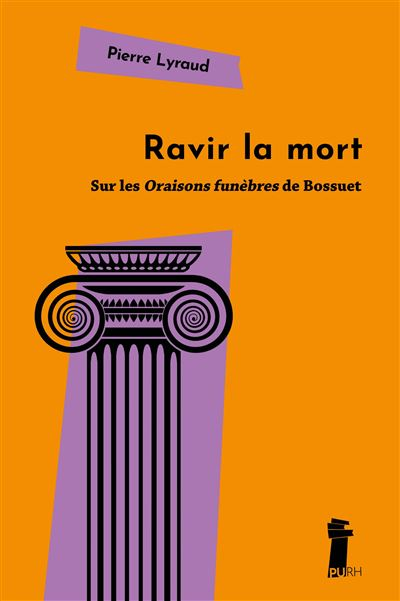

Pistes bibliographiques
Le calendrier de l’Agrégation interdit de proposer à ce stade une bibliographie trop gigantesque Il est surtout essentiel de lire de près les oraisons et de s’arrêter à chaque difficulté ou chaque allusion pour chercher des précisions – les notes de Truchet sont notoirement insuffisantes.Voici néanmoins quelques conseils de lecture, par ordre de priorité.
Gérard Ferreyrolles, Béatrice Guion, Jean-Louis Quantin, avec la collaboration d’Emmanuel Bury, Bossuet, Paris, PUPS, 2008. L’ouvrage fournit un socle général sur la religion, l’histoire, la politique, la prédication. C’est le premier ouvrage à lire en complément des introductions de Truchet. Il est*disponible gratuitement*sur le site des PUPS (il suffit de créer un compte sur le site)
Revue Bossuet, n 17, 2026, dossier « Les oraisons funèbres de Bossuet », dir. Pierre Lyraud et Anne Régent-Susini. On y trouve des articles essentiels de Sophie Hache, Stéphane Macé, Pierre Lyraud, Yohann Deguin, Jean-Philippe Grosperrin et Jean-Louis Quantin. L’ouvrage est disponible en numérique, mais malheureusement pas en accès libre .
Anne Régent-Susini, Le Marbre et la Cendre, dont nous attendons avec impatience la publication imminente : il s’agit d’une étude de l’ensemble du corpus des oraisons funèbres du XVIIe siècle, issue de l’essai d’habilitation de l’autrice.
Les principaux ouvrages plus imposants
Anne Régent-Susini, Bossuet et la rhétorique de l’autorité, Paris, Champion, 2011.
Jacques Truchet, La Prédication de Bossuet. Étude des thèmes, Paris, Cerf, 1960, 2 vol. Truchet passe en revue la grande cartographie doctrinale (mort, grâce, Providence, péché, passions, ministère, etc.)
Jacques Truchet, Politique de Bossuet, Paris, Armand Colin, 1966, auquel nous nous référerons beaucoup dans le cours (les princes, l’État, la souveraineté, l’histoire et les causalités politiques).
Un petit noyau d’articles
Anne Régent-Susini, « « Mêler mille personnages divers, faire le docteur et le prophète » : l’ethos bossuétiste dans Le Carême du Louvre et dans les Oraisons funèbres », Littératures classiques, no 46, 2002, p. 55-88 : https://www.persee.fr/doc/licla_0992-5279_2002_num_46_1_1879
Anne Régent-Susini, « La rhétorique, carrefour des sciences humaines et sociales : le genre des oraisons funèbres », Littérature, no 211, 2023, p. 72-86, : https://shs.cairn.info/revue-litterature-2023-3-page-72?lang=fr. Article particulièrement précieux parce qu’il fait éclater l’objet purement « littéraire » vers le rite, l’institution, le social et la mémoire, dans une perspective proche de celle que nous développerons ici.
Laurent Susini, « Ipsum audite : la parole de Dieu dans les Œuvres oratoires de Bossuet », Revue Bossuet, 2013, https://hal.science/hal-02507258 . L’article est essentiel pour comprendre l’autorité déléguée, la voix du prédicateur et son effacement devant la Parole.
Cinthia Meli, « Réflexions sur l’action des prédicateurs : l’exemple de Bossuet », Dix-septième siècle, n 257, 2012/4, p. 719-734, https://shs.cairn.info/revue-dix-septieme-siecle-2012-4-page-719?lang=fr . Article très éclairant pour comprendre la stratégie éditoriale et l’action oratoire.
A venir Pierre Lyraud fait paraitre aux Presses universitaires de Rouen et du Havre, cet automne (début novembre en principe), Ravir la mort . Sur les Oraisons funèbres de Bossuet, qui tient à la fois de l’essai personnel et du manuel d’Agrégation . L’ouvrage sera disposnible au format papier pour le prix (modique) de 13€ et disponible également gratuitement sur la plate-forme OpenEditions, dès parution
A noter que les « PURH » font également paraître un ouvrage du même type, et dans les mêmes conditions, sur Lorenzaccio, écrit par Sophie Mentzel.
Pour l’arrière-plan
Sur l’augustinisme, on pourra se reporter aux travaux de Philippe Sellier, par exemple ses Essais sur l’imaginaire classique, Paris, Champion, 2003.
Sur l’arrière-plan historique, on pourra se reporter au manuel de François Lebrun, un peu ancien mais qui offre un panorama général facile à appréhender: *Le XVII**e* siècle, chez Armand Colin.
Les notes et les références du présent cours enrichiront ponctuellement cette bibliographie volontairement modeste.

